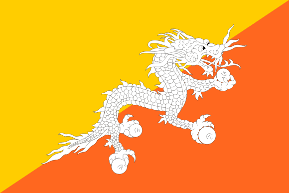

| Country Info | |
|---|---|
| Country | bhutan |
| Area | 38,394 km² |
| Population | 800,000 |
| Capital | Thimphu |
| Religion | Buddhism |
| Borders | India, China |
Bhutan is a small landlocked country located in the eastern Himalayas between India and China. It is known for its unique approach to development, focusing on Gross National Happiness rather than economic growth alone. The country has a mountainous landscape with forests, rivers, and rich biodiversity. Bhutan has preserved its culture and traditions, and Buddhism plays a central role in everyday life.
Thimphu is the capital and largest city of Bhutan. The country has a small population and a peaceful environment. Bhutan’s economy is mainly based on agriculture, hydropower, and tourism. The government carefully controls tourism to protect its culture and environment. Bhutan is often seen as a model for sustainable development and environmental conservation.